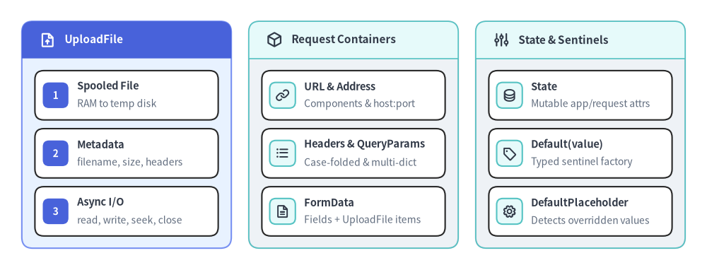

fastapi.datastructures
fastapi.datastructures モジュールからインポート可能なスプール式アップロードファイルラッパー、不変 ASGI リクエストコンテナ群、可変のアプリケーション／リクエスト状態名前空間、およびデフォルト値上書き判定センチネル（UploadFile、URL、Headers、QueryParams、FormData、State、Address、Default()、DefaultPlaceholder）のリファレンスです。

classUploadFile#
starlette.datastructures.UploadFile を継承し、Pydantic v2 コアスキーマおよび OpenAPI バイナリスキーマ生成フック（type: "string", contentMediaType: "application/octet-stream"）を備えたマルチパートアップロードラッパーです。閾値まではメモリ上、超過時は一時ディスクへ退避する SpooledTemporaryFile を内部で使用し、スレッドプール経由の非同期 I/O メソッドと同期 file ハンドルの両方を提供するとともに、リクエスト完了時に AsyncExitStackMiddleware によって自動クローズされます。
class UploadFile(StarletteUploadFile):
file: BinaryIO
filename: str | None
size: int | None
headers: Headers
content_type: str | None
def __init__(
self,
file: BinaryIO,
*,
size: int | None = None,
filename: str | None = None,
headers: Headers | None = None,
) -> None: ...
async def write(self, data: bytes) -> None: ...
async def read(self, size: int = -1) -> bytes: ...
async def seek(self, offset: int) -> None: ...
async def close(self) -> None: ...
属性とメソッド#
| メンバー | シグネチャ / 型 | 説明 |
|---|---|---|
filename |
str | None |
マルチパートの Content-Disposition ヘッダーに含まれる元ファイル名。信頼できない外部入力として扱い、ファイルシステムパスへ直接使用しないでください。 |
content_type |
str | None |
パートの Content-Type ヘッダーから取得された MIME メディアタイプ（例: "application/pdf", "image/png"）。 |
file |
BinaryIO |
同期 def エンドポイントやブロッキング BinaryIO を要求するライブラリから直接参照できる標準 Python ファイルオブジェクト（SpooledTemporaryFile）。 |
headers |
Headers |
アップロードパートに紐づく大文字・小文字非区別の Headers マッピング。 |
size |
int | None |
マルチパートパーサーによって算出されたアップロードデータの合計バイト数。 |
read() |
async def read(self, size: int = -1) -> bytes |
ワーカースレッドプール上で最大 size バイト（-1 の場合は末尾まで全バイト）を読み取ります。 |
write() |
async def write(self, data: bytes) -> None |
ワーカースレッドプール経由で内部ファイルオブジェクトへ data バイト列を書き込みます。 |
seek() |
async def seek(self, offset: int) -> None |
ワーカースレッドプール経由でファイルポインタをバイト位置 offset へ移動します（先頭へ戻す場合は await file.seek(0)）。 |
close() |
async def close(self) -> None |
ワーカースレッドプール経由で内部一時ファイルハンドルをフラッシュしてクローズします。 |
使用例#
import uuid
from fastapi import FastAPI, HTTPException, UploadFile
from fastapi.testclient import TestClient
app = FastAPI()
ALLOWED_TYPES = {"application/pdf": b"%PDF-", "image/png": b"\x89PNG\r\n\x1a\n"}
MAX_UPLOAD_BYTES = 1_048_576
@app.post("/documents")
async def inspect_document(upload: UploadFile) -> dict[str, str | int]:
magic = ALLOWED_TYPES.get(upload.content_type or "")
if magic is None:
raise HTTPException(status_code=415, detail="Unsupported media type")
header = await upload.read(len(magic))
if header != magic:
raise HTTPException(status_code=400, detail="Invalid file signature")
await upload.seek(0)
payload = await upload.read(MAX_UPLOAD_BYTES + 1)
if len(payload) > MAX_UPLOAD_BYTES:
raise HTTPException(status_code=413, detail="File exceeds size limit")
return {"storage_key": f"{uuid.uuid4().hex}.bin", "bytes": len(payload)}
client = TestClient(app)
res = client.post(
"/documents",
files={"upload": ("report.pdf", b"%PDF-1.7 sample", "application/pdf")},
)
assert res.status_code == 200
assert res.json()["bytes"] == 15
classURL#
starlette.datastructures.URL から再エクスポートされ、request.url や websocket.url で公開される不変 URL 値オブジェクトです。スキーム・ホスト・ポート・パス・クエリ各要素を遅延解析し、クエリやコンポーネントの変換メソッドは元の URL を変更せず新しい URL インスタンスを返します。
class URL:
def __init__(
self,
url: str = "",
scope: Scope | None = None,
**components: Any,
) -> None: ...
プロパティとメソッド#
| メンバー | 型 / シグネチャ | 説明 |
|---|---|---|
scheme, netloc, path |
str |
プロトコルスキーム（"http", "https", "ws", "wss"）、ネットワークロケーション（host:port）、およびデコード済みパス文字列。 |
query, fragment |
str |
生のクエリ文字列（先頭の ? なし）およびフラグメント識別子（先頭の # なし）。 |
hostname, port |
str | None, int | None |
小文字正規化されたホスト名と明示ポート番号（標準ポート省略時は None）。 |
username, password |
str | None |
authority 部から解析された任意のユーザー認証情報。 |
is_secure |
bool |
scheme が "https" または "wss" の場合に True を返します。 |
replace() |
replace(**kwargs: Any) -> URL |
指定した scheme・hostname・port・path・query・fragment を差し替えた新しい URL を返します。 |
include_query_params() |
include_query_params(**kwargs: Any) -> URL |
指定したクエリパラメータを追加・上書きした新しい URL を返します。 |
replace_query_params() |
replace_query_params(**kwargs: Any) -> URL |
クエリ文字列全体を kwargs で置き換えた新しい URL を返します。 |
remove_query_params() |
remove_query_params(keys: str | Sequence[str]) -> URL |
1 つ以上の指定クエリキーを除外した新しい URL を返します。 |
使用例#
from fastapi.datastructures import URL
base = URL("https://api.example.com:8443/v1/items?page=1&tag=core")
assert base.is_secure is True
assert base.hostname == "api.example.com"
assert base.port == 8443
next_url = base.include_query_params(page=2).remove_query_params("tag")
assert str(next_url) == "https://api.example.com:8443/v1/items?page=2"
classHeaders#
starlette.datastructures.Headers から再エクスポートされ、request.headers、websocket.headers、upload_file.headers で使用される大文字・小文字非区別の不変 HTTP ヘッダーマッピングです。重複ヘッダー行を raw にそのまま保持し、getlist() による複数値取得をサポートします。
class Headers(Mapping[str, str]):
def __init__(
self,
headers: Mapping[str, str] | None = None,
raw: list[tuple[bytes, bytes]] | None = None,
scope: MutableMapping[str, Any] | None = None,
) -> None: ...
パラメータとメソッド#
| メンバー | 型 / シグネチャ | 説明 |
|---|---|---|
headers |
Mapping[str, str] | None |
小文字 Latin-1 バイト対へエンコードされる任意の文字列辞書。 |
raw |
list[tuple[bytes, bytes]] |
(小文字ヘッダー名バイト列, 値バイト列) タプルの内部 ASGI リスト。 |
scope |
MutableMapping[str, Any] | None |
"headers" キーを含む任意の ASGI スコープ辞書。 |
getlist() |
getlist(key: str) -> list[str] |
大文字・小文字を区別せず key に一致する全ヘッダー値を受信順のリストで返します。 |
mutablecopy() |
mutablecopy() -> MutableHeaders |
レスポンスヘッダー編集などに利用できる可変の MutableHeaders コピーを返します。 |
使用例#
from fastapi.datastructures import Headers
headers = Headers(
raw=[
(b"x-request-id", b"req-77"),
(b"accept", b"application/json"),
(b"accept", b"text/event-stream"),
]
)
assert headers["X-Request-ID"] == "req-77"
assert headers.getlist("Accept") == ["application/json", "text/event-stream"]
classQueryParams#
starlette.datastructures.QueryParams から再エクスポートされ、request.query_params や websocket.query_params で提供される URL クエリ文字列用の不変マルチディクトです。params[key] は該当キーの最後の値を返し、重複キーの全要素は getlist(key) または multi_items() で取得します。
class QueryParams(ImmutableMultiDict[str, str]):
def __init__(
self,
*args: ImmutableMultiDict[Any, Any]
| Mapping[Any, Any]
| list[tuple[Any, Any]]
| str
| bytes,
**kwargs: Any,
) -> None: ...
メソッド#
| メソッド | シグネチャ | 説明 |
|---|---|---|
get() |
get(key: str, default: Any = None) -> str | Any |
key に対応する単一文字列値（未指定時は default）を返します。 |
getlist() |
getlist(key: str) -> list[str] |
同一 key に紐づくすべてのクエリ文字列値をリストで返します。 |
multi_items() |
multi_items() -> list[tuple[str, str]] |
重複キーを含むすべての (key, value) ペアをクエリ順で返します。 |
使用例#
from fastapi.datastructures import QueryParams
params = QueryParams("tag=python&tag=async&limit=20")
assert params["limit"] == "20"
assert params.getlist("tag") == ["python", "async"]
assert ("tag", "python") in params.multi_items()
classFormData#
application/x-www-form-urlencoded および multipart/form-data ペイロードの解析結果を表す不変マルチディクト（starlette.datastructures.FormData の再エクスポート）で、await request.form() から返されます。文字列フィールド（str）とアップロードファイル（UploadFile）を保持し、全一時ファイルを一括解放する非同期 close() メソッドを備えます。
class FormData(ImmutableMultiDict[str, str | UploadFile]):
def __init__(
self,
*args: FormData
| Mapping[str, str | UploadFile]
| list[tuple[str, str | UploadFile]],
**kwargs: str | UploadFile,
) -> None: ...
async def close(self) -> None: ...
メソッド#
| メソッド | シグネチャ | 説明 |
|---|---|---|
getlist() |
getlist(key: str) -> list[str | UploadFile] |
key で送信されたすべての文字列値または UploadFile 要素をリストで返します。 |
multi_items() |
multi_items() -> list[tuple[str, str | UploadFile]] |
送信順序を保った全 (field_name, value) タプルのリストを返します。 |
close() |
async def close(self) -> None |
コンテナ内のすべての UploadFile インスタンスに対して .close() を非同期実行します。 |
使用例#
import asyncio
import io
from fastapi.datastructures import FormData, UploadFile
upload = UploadFile(file=io.BytesIO(b"hello"), filename="note.txt")
form = FormData([("title", "Quarterly Report"), ("tag", "q1"), ("tag", "finance"), ("file", upload)])
assert form["title"] == "Quarterly Report"
assert form.getlist("tag") == ["q1", "finance"]
asyncio.run(form.close())
classState#
starlette.datastructures.State から再エクスポートされ、app.state（アプリケーション lifespan 単位）や request.state／websocket.state（接続単位）にアタッチされる動的属性コンテナです。内部辞書をバックエンドとして任意の属性代入・削除と未定義時の AttributeError 送出を提供します。
class State:
def __init__(self, state: dict[str, Any] | None = None) -> None: ...
パラメータ#
| パラメータ | 型 | デフォルト | 説明 |
|---|---|---|---|
state |
dict[str, Any] | None |
None |
State インスタンスの初期属性を格納する任意の辞書。 |
使用例#
from contextlib import asynccontextmanager
from collections.abc import AsyncIterator
from fastapi import FastAPI, Request
from fastapi.testclient import TestClient
@asynccontextmanager
async def lifespan(app: FastAPI) -> AsyncIterator[None]:
app.state.region = "us-east1"
yield
app = FastAPI(lifespan=lifespan)
@app.get("/region")
def read_region(request: Request) -> dict[str, str]:
return {"region": request.app.state.region}
with TestClient(app) as client:
assert client.get("/region").json() == {"region": "us-east1"}
classAddress#
ASGI サーバーが scope["client"] を設定した際に request.client や websocket.client から返される不変 NamedTuple（(host, port)、starlette.datastructures.Address の再エクスポート）です。Unix ドメインソケット接続時や一部のテストスコープでは request.client が None になる場合があります。
class Address(NamedTuple):
host: str
port: int
フィールド#
| フィールド | 型 | 説明 |
|---|---|---|
host |
str |
ASGI サーバーから通知されたクライアントの IPv4／IPv6 アドレスまたはホスト名文字列。 |
port |
int |
ASGI サーバーから通知されたクライアントの TCP 送信元ポート番号。 |
使用例#
from fastapi.datastructures import Address
addr = Address(host="127.0.0.1", port=54321)
assert addr.host == "127.0.0.1"
assert addr.port == 54321
assert tuple(addr) == ("127.0.0.1", 54321)
defDefault()#
静的型チェッカー向けに元の型 DefaultType を保持したまま、実行時には DefaultPlaceholder(value) でデフォルト値をラップする内部センチネルファクトリ関数です。FastAPI、APIRouter、APIRoute の引数（例: response_class: type[Response] = Default(JSONResponse)）で使われ、ルート単位で明示上書きされていない場合にルーターやアプリ既定値を継承させるために機能します。
def Default(value: DefaultType) -> DefaultType
パラメータ#
| パラメータ | 型 | デフォルト | 説明 |
|---|---|---|---|
value |
DefaultType |
(必須) | DefaultPlaceholder(value) 内に保持するフォールバック既定値。 |
使用例#
from fastapi.datastructures import Default, DefaultPlaceholder
from fastapi.responses import JSONResponse
sentinel = Default(JSONResponse)
assert isinstance(sentinel, DefaultPlaceholder)
assert sentinel.value is JSONResponse
classDefaultPlaceholder#
Default(value) が返す内部プレースホルダクラスです。既定値が真値（True やクラスオブジェクトなど）であっても、フレームワークの未変更デフォルトなのか呼び出し側が明示指定した値なのかを正確に識別します。真偽値判定は bool(self.value) に委譲され、同じ .value を持つ DefaultPlaceholder 同士のみ等価と判定されます。
class DefaultPlaceholder:
def __init__(self, value: Any) -> None: ...
def __bool__(self) -> bool: ...
def __eq__(self, o: object) -> bool: ...
属性と特殊メソッド#
| メンバー | シグネチャ / 型 | 説明 |
|---|---|---|
value |
Any |
プレースホルダ内部に保持されている元のデフォルト値オブジェクト。 |
__bool__() |
def __bool__(self) -> bool |
真偽値評価を bool(self.value) に委譲します。 |
__eq__() |
def __eq__(self, o: object) -> bool |
o が DefaultPlaceholder インスタンスかつ o.value == self.value の場合にのみ True を返します。 |
使用例#
from fastapi.datastructures import DefaultPlaceholder
truthy_default = DefaultPlaceholder(True)
empty_default = DefaultPlaceholder("")
assert bool(truthy_default) is True
assert bool(empty_default) is False
assert truthy_default == DefaultPlaceholder(True)
assert truthy_default != True # noqa: E712